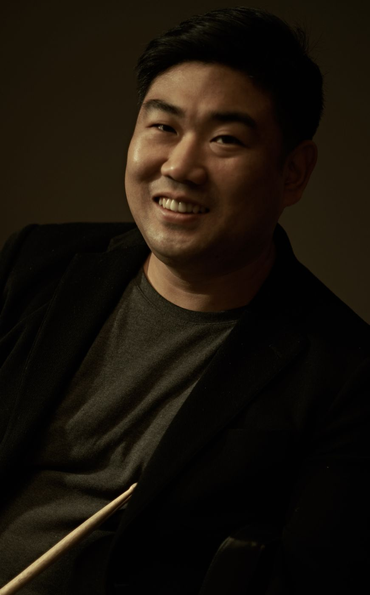

My story
Twenty years of
playing what I hear.
The long version. How a kid from Daejeon who did not like jazz ended up believing in it like a religion, and what the people on the way taught me.
 Play what you hear
Play what you hearI didn't like jazz.
I was born in Daejeon. I started on piano at five, went through clarinet and saxophone, and came back to drums the day I saw a drummer on television. My mother found me a teacher, and that is how my life with the drums began.
At Kyunghee University, in the Department of Postmodern Music, I loved everything except jazz. I read charts in a musical theatre band and played percussion in an orchestra. I worked on pop records and tours, and played behind singers on television. Pop or anything else, I played whatever work came in.
Jazz only sounded difficult. I did not really know what kind of music it was, and I could not find any fun in it. I did not love music back then. I loved the drums.
A beer and a jazz club
When I returned from military service, a German bassist named Martin Zenker was at the university as a visiting professor. I could not speak a word of English, but I could feel that he truly meant to teach his students.
He always told them the same thing.
Come to the club the night I play. I'll buy the beer. If you want to learn music, you have to come to a jazz club.
So I went.
The music in that small jazz club was loud, and it was alive. It was also the first day of my life that I mixed with foreigners. Jazz clubs often hold jam sessions, where players bring friends up on stage to play spontaneously. That night the host called me up to play one tune.
I had no idea what was going on. I just played. But somewhere in there the fun started, and my heart started to race.
I did not know the tunes. When the musicians called a title, I could not even catch the English pronunciation. So I went into the bathroom, wrote it down in Korean the way it sounded, and looked it up when I got home.
The first tune was "Misty". I did not even know it was spelled M-I-S-T-Y. I was ashamed of not knowing. Looking back, I was so young. It was 2007.
Play in the Moment
After that I learned a great deal of music from Martin and worked with him. Then Martin booked a Korean tour for the New York saxophonist Jesse Davis and put me on drums.
The truth is, I did not really know who Jesse Davis was. I simply trusted Martin.
At the airport the airline lost Jesse's luggage. He chain-smoked in front of the terminal while I nervously bought him a Coke. He drank it in one go and said, with a furious look on his face:
"Anyway, let's go."
That was our first meeting.
The next day was a televised concert recording at EBS Space. For the camera movements and the broadcast, the producers asked for a set list. But Jesse said he had not decided what to play.
Five minutes before the show, he suddenly handed the band members the tunes he wanted to play. In a panic I held up the charts and asked about the groove and the tempo. But he kept repeating the same thing.
Whoa whoa whoa… calm down, calm down. You still don't understand. Just play what you hear on stage.
And the music began.
It was a sound I had never heard before. Warm, filling the hall without a microphone. Not sharp at all, phrases that went straight into the chest.
That night Jesse pulled out a tune he had not played for years. It was like a prayer for his daughter. People in the audience, hearing him for the first time, wiped away tears.
In that moment my role became clear. Jesse's direction toward the music was so clear that all I had to do was support it. I did not need to try to show myself. My job was to disappear into that music.
In the middle of the show Jesse introduced me as "our great young drummer, Minchan Kim", signalled me to solo, and walked off stage. I was young and inexperienced and panicked, but I trusted myself and played what I wanted to play. At that moment Jesse was listening to me precisely, and he came in with the melody at exactly the timing I wanted. Until then we had never once played together.
That concert was released on the German label Nagel Heyer as the album Soul Searchin': Live in Seoul. For the next several years Jesse, Martin and I toured Europe together.
A few years later, after a show in Europe, Jesse came up to me on stage and asked:
"Where on earth did you learn that?"
I did not know what he meant. But now I think I understand a little. What he was talking about was naturalness.
Jesse told me many times that there was something special in my music. It took me ten years to believe it myself.
Germany: take what I don't have
When the pandemic stopped everything, I got a call from Martin, who had gone back to Europe.
"You can't do anything anyway. Come here, do a master's and play."
Tuition was free, and my friends handled all the paperwork. I got on a plane. That is how I spent almost three years in southern Bavaria, Germany.
Germany had a lot of good things, but it was more rigid than I expected, in daily life and in music. Honestly, it was stifling.
My professor was Austrian, a man with a solid career in Europe. In jazz alone I could feel he was not ahead of me, but in pop, Latin and other styles he was far ahead, and deeper.
So I changed my thinking.
'Fine. Then I will take what you have that I don't.'
I asked him about everything he knew. He was happy to be able to share what he had. That is how we came to respect each other and became friends. We are still in touch.
That is still how I learn. And that is how I teach.
New York: jazz is not a genre
Life in Europe did not satisfy my curiosity about jazz 100%.
I had played jazz for a long time, but it was in New York that I truly began to understand it.
Jesse was not someone who taught by passing on information. He disliked being asked for it. And yet he respected my playing, from someone who knew nothing, all the way down. Why he had insisted so much that I come to New York, I only understood once I got there.
Jazz is not a by-product of knowledge, and it is not simply a genre. It is Black culture itself, and only by understanding that culture can you get close to the source of this art.
As jazz became a global business, systematic ways of teaching appeared. Play it like this here, practice like that there. That does not mean the information is wrong. Most of it is right. But the real music is not played that way. People try to build knowledge first. I think that order is backwards.
The strangest thing about playing with New York musicians was that nobody gave orders. No one explained to me how to play. They waited until change happened within the natural flow.
A band is like a magnet. Once a direction is set, everyone is pulled that way. Feedback comes only when the direction is wrong. The rest is complete freedom.
If a leader thinks he is playing a Latin tune and it sounds like funk to the drummer, the answer that comes back is:
"I like it. If my melody sounds to you like that rhythm, then you made that."
The pianist is not an expert on drums. The drums are the drummer's domain. Underneath it is a deep respect for what another person feels and expresses. Everyone may love a different colour, but the tools we use to make music together are the same.
Nights at Smalls and Mezzrow. And one afternoon in Central Park when strangers began, one by one, to dance to our playing. Fifty, seventy, a hundred of them. Warm, full, alive.
I still go back to that feeling.
We play magic tonight
When every player fully respects the others and fully hears their sound, what jazz musicians often call "magic" happens.
Of course it does not come every night. A professional has to keep a steady level regardless of circumstances. A bad instrument, a terrible sound system, rain pouring on an outdoor festival: the same. But even in those conditions, magic can happen.
I have had shows like that too. I think it has come two or three times so far.
You can feel the difference between real applause and polite applause from the stage.
It is a circle of love. When the musician sends out energy, something in the listener's chest grows warm. That feeling returns to the stage, and the musician takes it, amplifies it, and sends it out again. That is the power of real music.
A friend in Mongolia decided to become a jazz musician after seeing my first concert. A chef friend told me he got through his hardest season on my music. Some people write to me the next day because the feeling has not worn off after the show.
The condition for magic is one thing: believe in yourself first. If I do not believe in me, then even if someone else wants to believe in me, I cannot accept it.
Now
I travel the world, moving between Seoul, New York and Europe. I lead my own projects, write music between tours, teach students, and play wherever my music is needed.
Two words keep circling inside me, on stage and off. Straightforwardness, and harmony.
Say what I want to say, and keep my place in the room so that we fit together.
Everything I am building now, the new recordings, the book for people who have never heard jazz, and this website, starts from one idea.
I play for the people in the room. And the people are already waiting.
